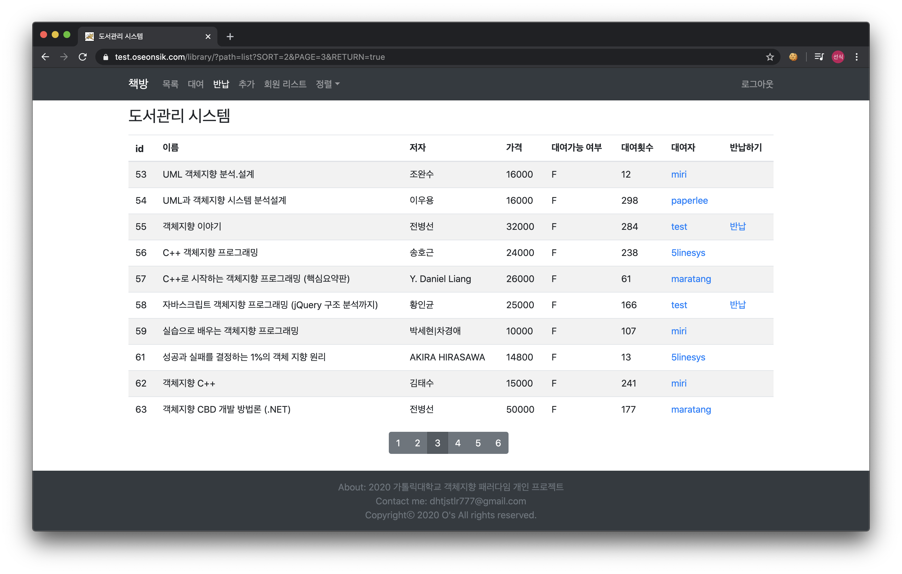
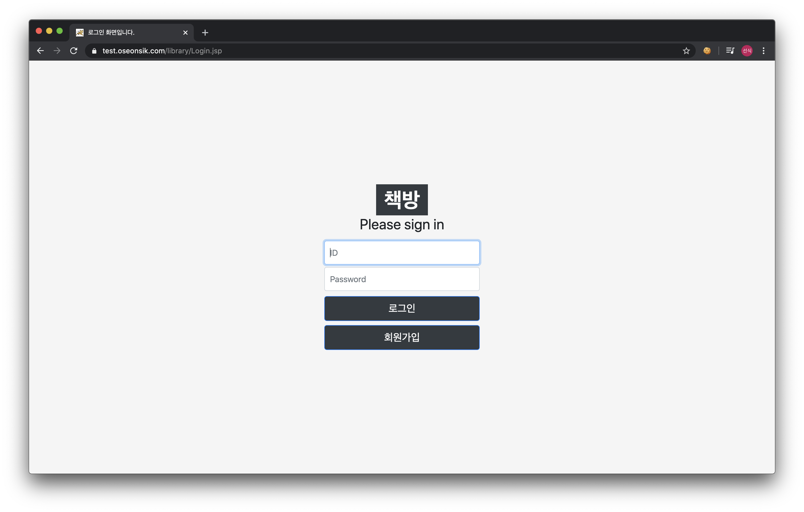
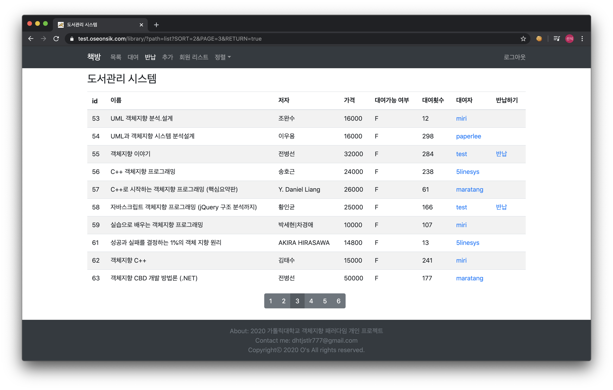
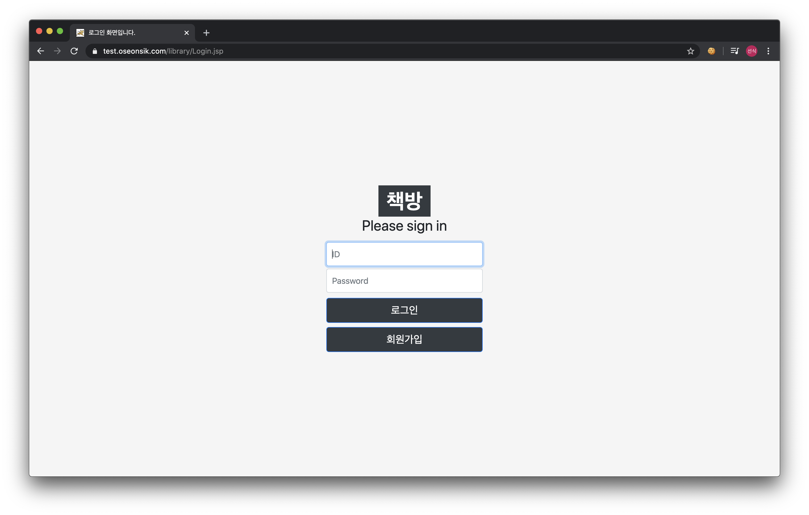
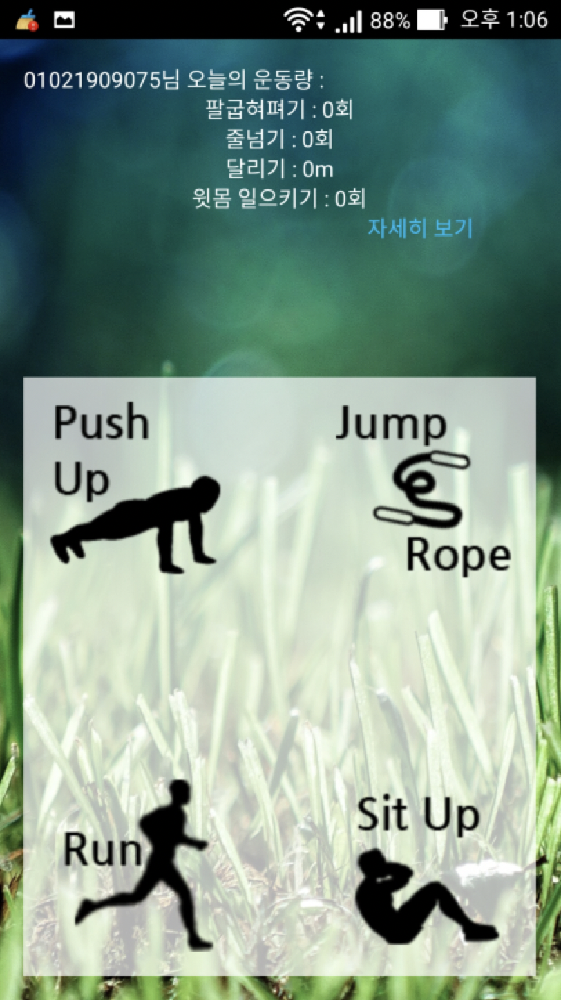
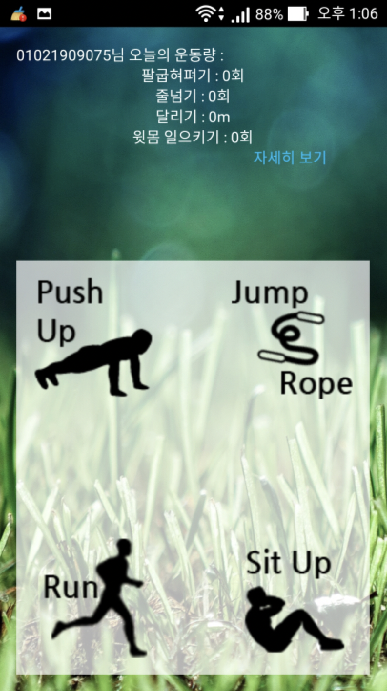

도서관리 시스템 (2020)
 



본 도서관리 시스템은 로그인을 해야만 사용이 가능한 서비스입니다.
SHA256 암호화 방식을 통해 데이터베이스 안전하게 비밀번호를 저장합니다.
부트스트랩을 활용해 반응형 웹을 제공하여 다양한 인터페이스에서 사용성을 향상시켰습니다.
대출한 사람의 정보를 빠르게 확인하여 연락을 통해 다른 사람이 도서를 대출할 때 도움을 줄 수 있게 했습니다.
사용기술 : Apache Tomcat, Jsp, Java Servlet, MySql, jstl, BootStrap, CSS, Javascript
OLLOC (2020)
OLLOC은 @paperlee와 공동으로 진행한 프로젝트입니다.
OLLOC은 기존의 SNS와 다르게 글 작성에 제약을 걸어 정돈된 느낌의 SNS를 만들자는 생각에서 출발했습니다.
따라서 OLLOC은 글을 작성할 때 꼭 사진을 함께 올려야 한다는 첫번째 규칙을 세웠습니다.
여기에 추가적으로 재미적인 요소를 위해 사진마다 사진을 찍은 장소를 추가한다는 규칙을 세웠습니다.
저는 프로그램의 클라이언트(프론트엔드)를 담당했습니다. 추가적으로 OLLOC의 LOC은 LOCation의 약자입니다.
사용기술 : 프론트 - React.js, SASS(SCSS), Kakao Maps API, 백엔드 - python, django, django-rest-framework, mariaDB
Git Chat (2019)
컴퓨터공학 팀프로젝트에서 사용할 수 있는 채팅 프로그램입니다.
Git Chat은 사용자가 만든 대화방과 대화 참여자들이 사용하는 Github Repository를 연동하여
채팅 참여자의 대화량, Github commit수를 이용하여 기여도를 평가하는 프로그램입니다.
친구추가, 접속상태 실시간 확인, 대화방 내 기여도 1등에게 왕관 표시를 해주고, 오프라인 시에 메세지 수신이 가능하며
프로그램 종료시에도 대화내용을 저장할 수 있는 기능을 가진 1:N 채팅이 가능한 프로그램입니다.
사용기술 : Java, Java Socket(TCP/IP), Java swing, Java Seleninum, jsoup, Ubuntu_Server(AWS), MySQL
GithubDaily Health (2015)
 

초중고교에서 체력관리에 사용할 수 있도록 고안하여 만든 프로그램입니다.
Daily Health는 별도의 웨어러블 기기 없이 스마트폰의 센서를 이용하여 집에서 운동을 하고 운동량을 기록하는
프로그램 입니다. 또한, 관리자 프로그램과 연동되어있는 스마트폰의 운동량을 수집하여 그래프로 수치화해
가독성을 높혔습니다. 관리자 프로그램을 이용하여 다수의 이용자의 상태를 확인하고 운동을 시킬 수 있습니다.
개인 이용자도 충분히 스스로 운동량을 스마트폰으로 확인하며 사용하기에 무리없는 프로그램입니다.
관리자 프로그램 : vb.NET 2010, 서버 : C Socket, 애플리케이션 : Java, XML 을 이용하여 만든 프로그램입니다.
Are U oK? (2014)
아파도 병원에 갈 시간이 없이 바쁜 현대인을 위해 참고용으로 자신의 몸을 자가진단 하도록 도와주는 프로그램입니다.
Are U Ok?는 청력과 색맹, 색각 검사를 할 수 있으며, 몸 상태를 콤보박스에서 단계적으로 선택해나가 의심되는 질병을
프로그램 사용자에게 알려줍니다. 또한, 하루동안 자신이 먹은 음식과 양을 선택하면 섭취한 칼로리의 양을 대략적으로
계산하는 기능과 운동량과 운동종류를 선택해 소모한 칼로리를 대략적으로 계산해주는 기능이 있습니다.
VB6.0을 이용하여 만든 프로그램입니다.
Computer BlackBox (2013)
청소년들이 스스로 올바른 컴퓨터 사용습관을 기를 수 있도록 도와주는 프로그램입니다.
Computer BlackBoox는 PC자동종료, 지정한 사이트 접속 차단, PC 사용시간 알림, 특정 사이트 접속시간 확인
특정 프로그램 이용시간 확인, 특정 사이트 접속시간 확인 등의 기능이 있습니다.
VB6.0을 사용하여 만든 프로그램입니다.